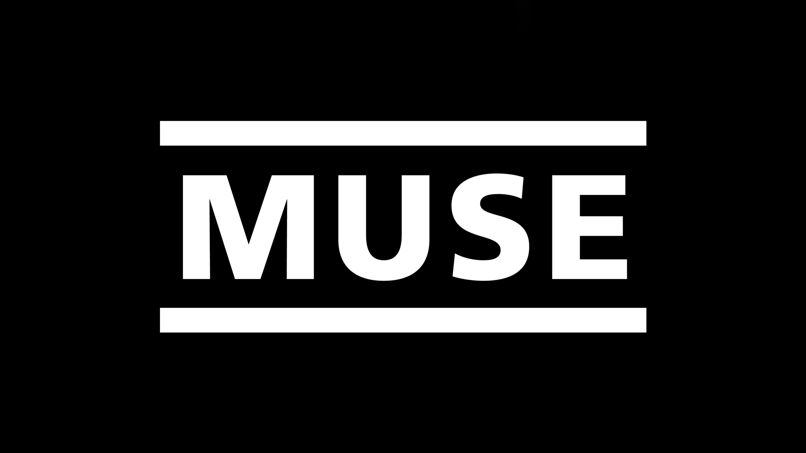

MUSE are an English rock band formed in Teignmouth, Devon in 1994.
The band consists of frontman and lead guitarist Matthew Bellamy, bassist Chris Wolstenholme and drummer Dominic Howard.
Thanks to a signature sound that combines heavily distorted guitars, dynamic basslines and electronic grandeurs, they became one of the most recognisable rock acts of 21st century.
The three members met while in high-school and started as a typical band of teenagers, heavily influenced by the American scene.
After some years building a fanbase, they rose to fame with their first two releases, which received good critical response.
Nowadays, MUSE have released nine studio albums, completed many world tours and also won numerous awards, including two Grammy Awards.
You can visit their site by clicking the picture down below
Explore MUSE's discography
Discover their live shows